To start this tutorial, download the following ZIP file:
https://skyline.ms/tutorials/PeakImputationDia.zip
Extract the files in it to a folder on your computer, like:
C:\Users\brendanx\Documents
This will create a new folder:
C:\Users\brendanx\Documents\PeakImputationDia
The "Peak Area - Relative Abundance" graph shows all the proteins in the document sorted by abundance. The formatting on this graph in this document has been customized so that points corresponding to extracellular vesicle (EV) proteins are displayed as green triangles, and abundant plasma proteins are displayed as blue inverted triangles. The replicates whose names begin with "Total" measured a sample of plasma with no enrichment, and you can see that the highlighted plasma proteins are higher abundance than the EV proteins.

The replicates whose names begin with "EV" measured samples which used the MagNet protocol to enrich for EV proteins. In these samples, the abundance of the EV proteins is increased in these samples.
The CD9 protein has been selected. It is one of the EV proteins with medium abundance and will serve as a good example of how the peak boundary imputation feature works in replicates where signal from peptides is difficult to detect.
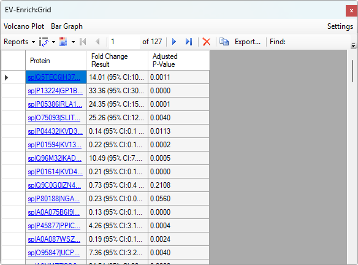
This displays the results of the "EV-Enrich" group comparison. The number of rows in the grid is much less than the total number of proteins in the document because the replicates where no peak was chosen for a peptide are excluded from that peptide's group comparison. To display the volcano plot, do the following:

The missing proteins peaks are in replicates where the DIA-NN peptide search engine was unable to confidentally identify a peak. In this case, a few of the most abundant plasma proteins, represented by blue inverted triangles, had a complete set of peptides detected across a sufficient number of replicates for Skyline to calculate proteins. None of the EV proteins, which would have been represented by green triangles, appear on the volcano plot. In general, the replicates with lower abundance will tend to be the ones where the peak was not confidentally identified, but certainly not in all cases. You can modify the group comparison to tell Skyline to treat the replicates with missing peaks as if the peak had zero area.
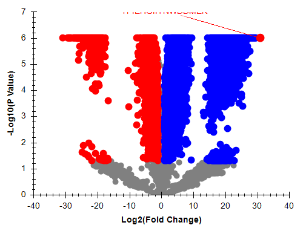
After you make that change to the group comparison definition, the grid will have one row for each protein in the document and the volcano plot will have more points.

The volcano plot remains zoomed in on the subset of data that existed before the change to the group comparison settings. Closing and reopening the volcano plot will reset its display to the default amount of zoom for the data that is displaying.
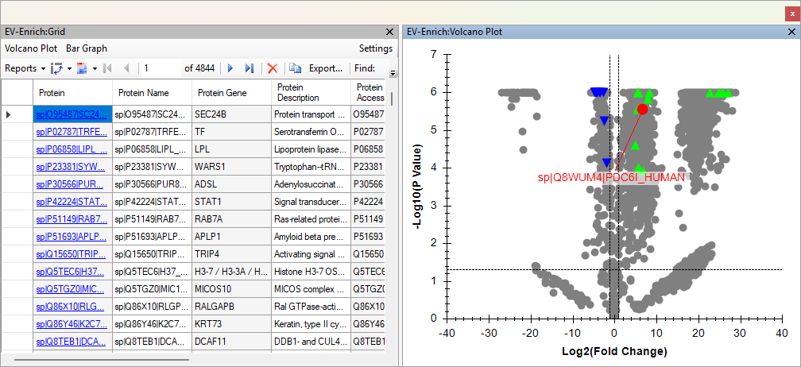
The currently selected protein is still "CD9".
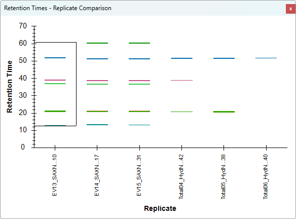
The Retention Times - Replicate Comparison graph shows retention times for all seven replicates belonging to the currently selected protein. Some of the peptides were detected in all samples, but some were not detected in the unenriched "Total" samples, and do not have lines on the graph indicating the retention time of the chosen peak.
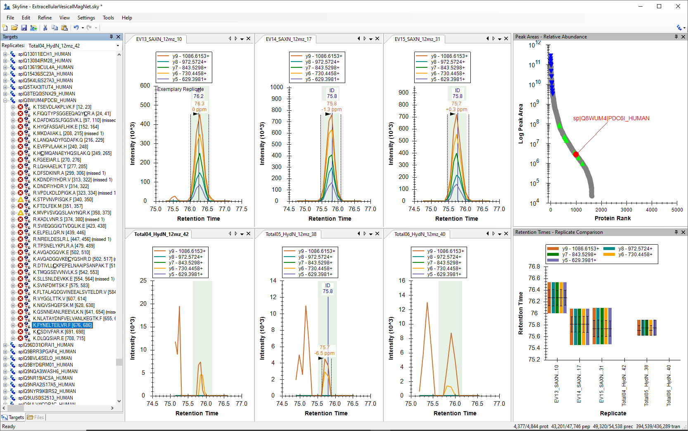
The retention times graph shows the retention times of the peaks of one of the peptides from the CD9 protein. That peptide was not detected in the Total samples
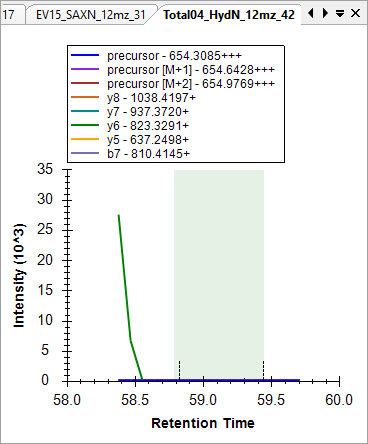
No peak has been chosen for this peptide in this replicate. Skyline has the ability to tell you where on this chromatogram the peak from the best-scoring replicate could be found.
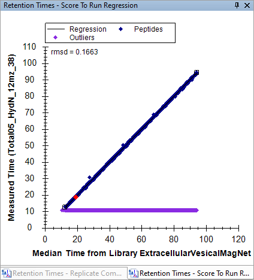
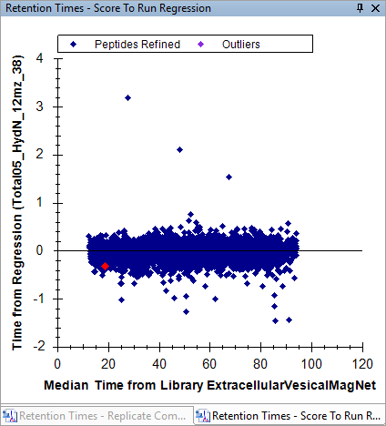
Now we are going to tell Skyline to set the peak boundaries for all missing peaks based on the peak boundaries of the best-scoring replicate.

Skyline has now set the integration boundaries to coincide with the green rectangle.
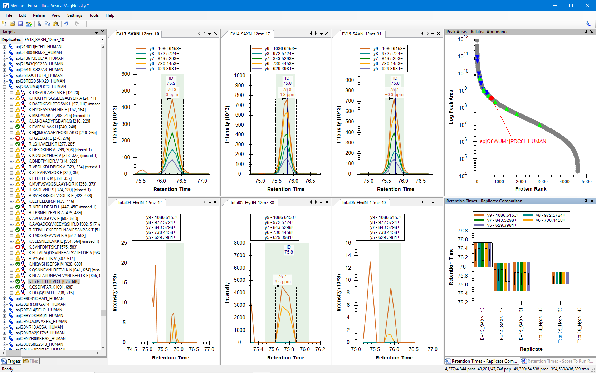
The Retention Times graph shows peak boundaries all replicates.
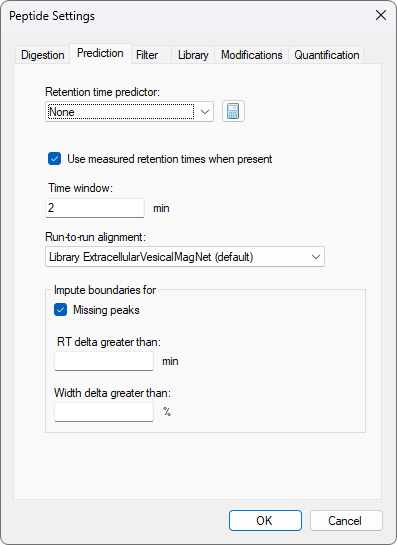
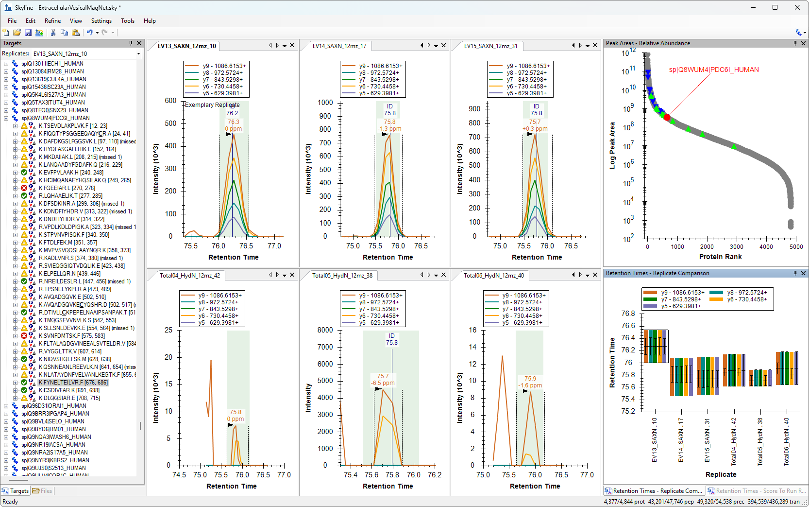

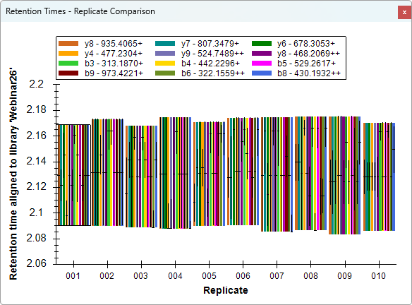
Skyline changes the scaling on Y-axis of the Retention Times graph so that instead of showing the actual retention times of the peak boundaries, it shows where those peak boundaries correspond to when compared to the average retention times from the spectral library in this document.
Initially, Skyline chooses to display the retention time calculator which most closely matches the data in the document. When Skyline is first installed, the only retention time calculator it knows about is called "SSRCalc", which is what it often ends up being displaying. It can sometimes take a long while for Skyline to do all the linear regressions necessary to choose the best calculator.
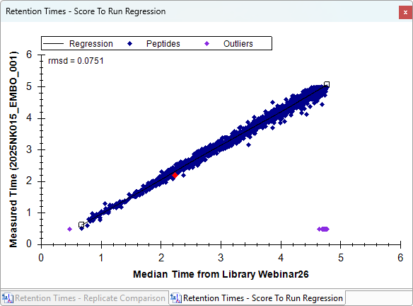